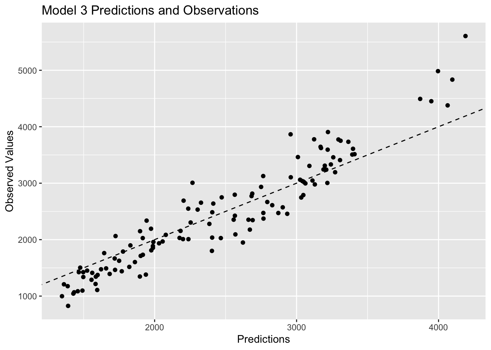

# load necessary packages
library(here) # to load data
library(tidymodels) # for model building/processing
library(ggplot2) # for visualizations
library(corrplot) # for correlation plot
library(glmnet) # for LASSO regression
library(parsnip) # for model building and tuning
library(ranger) # for random forest
library(dials) # for parameter tuning
# set random seed for reproducibility
rngseed <-set.seed(1234)
# load the clean data
clean_mavo <- readRDS(here("ml-models-exercise", "clean_mavo.rds"))Machine Learning Models Exercise
Preliminaries
More processing
I will try to figure out what the 7 and 88 categories in the RACE variable represent.
# go on a treasure hunt within the data
ggplot(clean_mavo, aes(x=RACE)) + geom_bar()
table(clean_mavo$RACE)
1 2 7 88
74 36 2 8 clean_mavo %>% filter(RACE == 7)# A tibble: 2 × 7
Y DOSE AGE SEX RACE WT HT
<dbl> <dbl> <dbl> <fct> <fct> <dbl> <dbl>
1 2790. 50 49 2 7 69.6 1.58
2 1491. 25 41 1 7 85.8 1.79clean_mavo %>% filter(RACE == 88)# A tibble: 8 × 7
Y DOSE AGE SEX RACE WT HT
<dbl> <dbl> <dbl> <fct> <fct> <dbl> <dbl>
1 2796. 25 20 1 88 61.9 1.73
2 2177. 50 31 1 88 88.3 1.76
3 1854. 25 24 1 88 70.7 1.78
4 4452. 50 24 1 88 58.4 1.66
5 2093. 25 39 2 88 58.2 1.62
6 2030. 25 26 1 88 63.6 1.72
7 3243. 50 21 1 88 81.9 1.77
8 1732. 25 26 1 88 72.2 1.70After visualizing the RACE variable, I found that there are only 2 observations of 7 and 8 observations of 88. I think that 1 and 2 represent white and non-white because that is the simplest way to divide a racial categorical variable. I filtered for the observations with RACE = 7 and found that there is one observation from each sex with similar age, so I do not see a correlation with any of the variables that can help me determine what it stands for. After filtering for the observations with RACE = 88, I see the majority of these observations are have SEX = 1, which has been previously determined to be male. I think 7 represents missing data because it is the least common observation, and 88 represents mixed race.
For this exercise, I will combine the 2 sparse categories into a third category.
# make sure variable is numeric
clean_mavo$RACE <- as.numeric(as.character(clean_mavo$RACE))
#create new variable in a fresh dataset
clean_mavo <- clean_mavo %>%
mutate(RACE = case_when(RACE == 7 ~ 3,
RACE == 88 ~ 3,
TRUE ~ RACE))
# check that the mutation worked
range(clean_mavo$RACE)[1] 1 3Pairwise correlations
I will select the continuous variables to create a correlation plot to determine if there are any pairwise correlations that need to be addressed.
# subset data to include continuous variables
clean_mavo2 <- clean_mavo %>%
select(Y, AGE, WT, HT)
## create correlation matrix
correlation_matrix <- cor(clean_mavo2, use="pairwise.complete.obs")
## create correlation plot
corrplot1 <- corrplot(correlation_matrix, method = "color", type = "upper")The height and weight variables have the strongest correlation with a coefficient around 0.6, followed by age and height with a coefficient around -0.3. None of the correlation coefficients indicate excessive correlation, which would be shown with an absolute value of 0.9 or higher. This implies that we won’t have too much of an issue with collinearity.
Feature Engineering
I will combine height and weight into a variable called BMI to practice feature engineering.
# determine units of height and weight
range(clean_mavo$HT)[1] 1.520031 1.930120range(clean_mavo$WT)[1] 56.6 115.3# add BMI variable using standard formula
clean_mavo <- clean_mavo %>%
mutate(BMI = WT / (HT^2))
# check that the mutation worked
range(clean_mavo$BMI)[1] 18.69 32.21Since we do not have a codebook with the units of height and weight, we have to guess. The range of the HT variable is 1.52 to 1.93, so that it likely measured in meters. The range of the WT variable is 56.6 to 115.3, which is likely measured in kilograms considering the age of the study participants. After creating the BMI variable, I found that it ranges from 18.69 to 32.21, which make sense for the BMI scale.
Model Building
I will use all of the data for the cross-validation process instead of splitting it into testing and training data in this scenario. I will build 3 models: 1) Linear model with all predictors 2) LASSO regression 3) Random Forest
First fit
I will start by performing a single fit to the training data without any cross-validation or model tuning. I have already compared this model to the null model in previous exercises, but that is always an important step.
# set seed for reproducibility
set.seed(rngseed)
# model 1: linear model with all predictors
lm_mod <- linear_reg() # specify the model type
model1 <- lm_mod %>%
fit(Y ~ . , data=clean_mavo) # include all predictors
tidy(model1) # print results # A tibble: 8 × 5
term estimate std.error statistic p.value
<chr> <dbl> <dbl> <dbl> <dbl>
1 (Intercept) 28954. 10180. 2.84 5.29e- 3
2 DOSE 58.5 4.77 12.2 2.09e-22
3 AGE 3.65 7.55 0.484 6.30e- 1
4 SEX2 -458. 212. -2.16 3.29e- 2
5 RACE -11.7 90.4 -0.129 8.98e- 1
6 WT 128. 59.6 2.15 3.38e- 2
7 HT -15141. 5734. -2.64 9.45e- 3
8 BMI -474. 188. -2.53 1.30e- 2# model 2: LASSO regression
lasso_mod <- linear_reg(penalty = 0.1, mixture = 1, mode = "regression") %>% # specify the model type
set_engine("glmnet")
model2 <- lasso_mod %>%
fit(Y ~ ., data = clean_mavo) # include all predictors
tidy(model2) # print results# A tibble: 8 × 3
term estimate penalty
<chr> <dbl> <dbl>
1 (Intercept) 27571. 0.1
2 DOSE 58.5 0.1
3 AGE 3.57 0.1
4 SEX2 -454. 0.1
5 RACE -9.81 0.1
6 WT 120. 0.1
7 HT -14361. 0.1
8 BMI -448. 0.1# model 3: random forest
rf_mod <- rand_forest(mode = "regression") %>% # specify the model type
set_engine("ranger", seed = rngseed) # set seed for reproducibility internally
model3 <- rf_mod %>%
fit(Y ~ ., data = clean_mavo) # include all predictors
summary(model3) # print summary Length Class Mode
lvl 0 -none- NULL
spec 8 rand_forest list
fit 14 ranger list
preproc 4 -none- list
elapsed 1 -none- list
censor_probs 0 -none- listNow that I have created the three models, I will find the RMSE for each one and plot the observed versus predicted values.
# set seed for reproducibility
set.seed(rngseed)
# create predictions with model 1
pred_model1 <- predict(model1, new_data = clean_mavo) %>%
select(.pred)
# combine predictions with observed values in model 1
model1pred <- bind_cols(pred_model1, clean_mavo$Y) %>%
rename(Y = "...2")New names:
• `` -> `...2`# calculate RMSE to determine model fit
model1RMSE <- rmse(model1pred, truth = Y, estimate = .pred)
# create predictions with model 2
pred_model2 <- predict(model2, new_data = clean_mavo) %>%
select(.pred)
# combine predictions with observed values in model 1
model2pred <- bind_cols(pred_model2, clean_mavo$Y) %>%
rename(Y = "...2")New names:
• `` -> `...2`# calculate RMSE to determine model fit
model2RMSE <- rmse(model2pred, truth = Y, estimate = .pred)
# create predictions with model 3
pred_model3 <- predict(model3, new_data = clean_mavo) %>%
select(.pred)
# combine predictions with observed values in model 1
model3pred <- bind_cols(pred_model3, clean_mavo$Y) %>%
rename(Y = "...2")New names:
• `` -> `...2`# calculate RMSE to determine model fit
model3RMSE <- rmse(model3pred, truth = Y, estimate = .pred)
# print all 3 RMSE values for comparison
print(model1RMSE)# A tibble: 1 × 3
.metric .estimator .estimate
<chr> <chr> <dbl>
1 rmse standard 581.print(model2RMSE)# A tibble: 1 × 3
.metric .estimator .estimate
<chr> <chr> <dbl>
1 rmse standard 581.print(model3RMSE)# A tibble: 1 × 3
.metric .estimator .estimate
<chr> <chr> <dbl>
1 rmse standard 354.The RMSE for model 1 using the standard multiple linear regression is , which is really similar to the RMSE for model 2, which is . These two models give very similar results because the underlying model building process is the same, but LASSO adds a penalty term to shrink coefficients, which allows for variable selection by automatically excluding irrelevant predictors. LASSO is helpful for dealing with predictors with multicollinearity, but I have already ruled out collinearity as an issue in this dataset, which is why the RMSE estimates are so similar between model 1 and model 2. The RMSE value for model 3 is much lower at , so it is the best performing model out of these 3 options. This observation makes sense because forest models are very flexible and can capture a lot of patterns in the data.
I will also visualize the predicted versus observed values for each of the models.
# visualize model 1 predictions
plot1<-ggplot(model1pred, aes(x=.pred, y= Y)) +
geom_point() +
geom_abline(linetype = "dashed") +
labs(x="Predictions", y="Observed Values", title="Model 1 Predictions and Observations")
plot1# visualize model 2 predictions
plot2<-ggplot(model2pred, aes(x=.pred, y= Y)) +
geom_point() +
geom_abline(linetype = "dashed") +
labs(x="Predictions", y="Observed Values", title="Model 2 Predictions and Observations")
plot2
# visualize model 3 predictions
plot3<-ggplot(model3pred, aes(x=.pred, y= Y)) +
geom_point() +
geom_abline(linetype = "dashed") +
labs(x="Predictions", y="Observed Values", title="Model 3 Predictions and Observations")
plot3
Plots 1 and 2 look very similar, which is to be expected based on the previous discussion of similarities between multiple linear regression and LASSO regression. Plot 3 shows observations that are closer to the 45 degree line, which represents strong agreement between the predictions and the observed values. Since model 3 has the lowest RMSE value, it makes sense that it would have the observations closer to the 45 degree line.
Tuning parameters
Model 1 does not need any tuning because it does not have any hyperparameters, so I will start by tuning the LASSO model first. I need to remove the 0.1 from the previous workflow to allow for tuning. I will create a grid of parameters to tune from a range of 1e-5 to 1e2. In this example, the “grid” is just a vector of numbers, but in models with multiple tuning parameters, it does become a grid. I had to mutate all my predictors to be numeric for the tuning process, and I also had to modify my workflow slightly because I got an error about needing to preprocess with a formula or recipe when using tune_grid().
# set seed for reproducibility
set.seed(rngseed)
# adjust the lasso model recipe
lasso_mod2 <- linear_reg(penalty = tune(), mixture = 1, mode = "regression") %>% # allow for tuning
set_engine("glmnet")
# change variable types for tune_grid()
clean_mavo$RACE <- as.numeric(clean_mavo$RACE)
clean_mavo$SEX <- as.numeric(clean_mavo$SEX)
# define the recipe
recipe <- recipe(Y ~ ., data = clean_mavo)
# define the workflow
workflow <- workflow() %>%
add_recipe(recipe) %>%
add_model(lasso_mod2)
# define a parameter grid with 50 values linearly spaced on a log scale
model2_grid <- grid_regular(penalty(range = c(log10(1e-5), log10(1e2))), levels = 50)
# create the apparent resamples object
apparent_resamples <- apparent(clean_mavo)
# tune the model
tuned_model2 <- workflow %>%
tune_grid(resamples = apparent_resamples,
grid = model2_grid,
metrics = metric_set(rmse))
# observe the tuning process
tuned_model2 %>%
autoplot()This plot shows that the model does best, shown by a lower RMSE value, for low penalty values and gets worse as the penalty parameter increases. The increases in RMSE values begin when the penalty parameter increases to around 1. LASSO regression involves adding a penalty parameter to the SSR term to determine the value of the cost function, which is RMSE in this case. This is why the RMSE can only increase and never be lower than the value from the linear and un-tuned models. The cost function for the linear model is evaluated with the SSR only, which is why it serves as the baseline in this comparison. At the lowest penalty, the RMSE for model 2 is the same as the linear model because the penalty term being added to the SSR in the cost function is negligible. As the penalty parameter goes up, you add a larger term to the SSR, which increases the value of the cost function. As the penalty increases, the RMSE value increases, and the performance of the model is considered worse and worse comparatively.
I will repeat this tuning process with the random forest model. There are many different tuning parameters, which I read about in the ranger() help file. I will tune mtry, the number of variables to possibly split at in each node, and min_n, the minimal node size. I also set the number of trees to 300. There are many other tuning options like manually setting observations per tree or choosing the regularization factor, but I will not explore those in this exercise. All other parameters will be kept at their defaults.
# view ranger() help file
?ranger()
# set seed for reproducibility
set.seed(rngseed)
# update workflow accordingly
rf_mod2 <- rand_forest(mode = "regression",
mtry = tune(), # allow for tuning
min_n = tune(), # allow for tuning
trees = 300) %>%
set_engine("ranger", seed = rngseed) # set seed for reproducibility internally
workflow2 <- workflow() %>%
add_recipe(recipe) %>%
add_model(rf_mod2) # use updated model
# define a 7 by 7 parameter grid
model3_grid <- grid_regular(mtry(range = c(1,7)),
min_n(range = c(1,21)),
levels = 7)
# tune the model
tuned_model3 <- workflow2 %>%
tune_grid(resamples = apparent_resamples,
grid = model3_grid,
metrics = metric_set(rmse))
# observe the tuning process
tuned_model3 %>%
autoplot()
Based on this plot, I can conclude that a higher value of mtry and a lower value for min_n lead to the best results. mtry is displayed on the x-axis, and the lowest RMSE value is achieved with 7 predictors regardless of the minimal node size. min_n options are shown by the colored lines, and it is clear that a smaller node size leads to a lower RMSE value. The best combination appears to be 5 predictors with a minimal node size of 1 to produce the lowest RMSE value of 250.This model is more difficult to understand that the LASSO regression model, so it is not clear why those values for the tuning parameters should give the best performance. This is one of the drawbacks of machine learning models.
Tuning with CV
I will use cross-validation to properly assess model performance during the tuning process. I will repeat the steps above for the LASSO and random forest models, but I will create real samples of the data this time. I will do a 5-fold cross validation, 5 times repeated for each model.
I will start with the LASSO model.
# set seed for reproducibility
set.seed(rngseed)
# repeat lasso model workflow
lasso_mod2 <- linear_reg(penalty = tune(), mixture = 1, mode = "regression") %>% # allow for tuning
set_engine("glmnet")
# define the workflow
workflow <- workflow() %>%
add_recipe(recipe) %>%
add_model(lasso_mod2)
# define a parameter grid with 50 values linearly spaced on a log scale
model2_grid <- grid_regular(penalty(range = c(log10(1e-5), log10(1e2))), levels = 50)
# create the real samples cross-validation
real_samples <- vfold_cv(clean_mavo, v = 5, repeats = 5)
# tune the model
realtuned_model2 <- workflow %>%
tune_grid(resamples = real_samples,
grid = model2_grid,
metrics = metric_set(rmse))
# observe the tuning process
realtuned_model2 %>%
autoplot()This plot shows more variation in the RMSE scores when the penalty term is larger than 1 compared to the first time I tuned the model. The LASSO model still does best when the penalty is small, but the smallest RMSE value for this model is now around 618. When I did not use cross-validation, the initial RMSE value was lower at about 582. The first tuning attempt produced a maximum RMSE of 625 when the penalty was 100, but the cross-validation tuning attempt produced a maximum RMSE of about 633 at the same point.
Cross-validation leads to an increase in RMSE because it essentially uses 25 combinations of the data to train and estimate the model, which creates a more generalized model that will perform better on data that it has not seen before. In the previous example, I only used one subset of the data to train the model, and that probably led to overfitting, which would present as a lower RMSE value.
I will repeat this process with the random forest model.
# set seed for reproducibility
set.seed(rngseed)
# update workflow accordingly
rf_mod2 <- rand_forest(mode = "regression",
mtry = tune(), # allow for tuning
min_n = tune(), # allow for tuning
trees = 300) %>%
set_engine("ranger", seed = rngseed)
workflow2 <- workflow() %>%
add_recipe(recipe) %>%
add_model(rf_mod2) # use updated model
# define a 7 by 7 parameter grid
model3_grid <- grid_regular(mtry(range = c(1,7)),
min_n(range = c(1,21)),
levels = 7)
# create the real samples cross-validation
real_samples <- vfold_cv(clean_mavo, v = 5, repeats = 5)
# tune the model
realtuned_model3 <- workflow2 %>%
tune_grid(resamples = real_samples,
grid = model3_grid,
metrics = metric_set(rmse))
# observe the tuning process
realtuned_model3 %>%
autoplot()
This plot shows that the RMSE value also went up for the random forest model. The same logic of cross-validation using 25 subsets of the data instead of 1 and producing a more generalized model holds in this case as well. The lowest RMSE value with 1 predictor was about 650 the first time I tuned the model, but it is about 745 when I use cross-validation. The best combination now appears to be 6 predictors with a node size of 21, which gives the lowest RMSE score of around 662.
The LASSO model now has a lower RMSE compared to the random forest model. The cross-validated LASSO model has an RMSE of 618 when the penalty is less than 1. The cross-validated random forest model has a lowest RMSE score of 662. The results of which model performs best are flipped when I use 1 subset of the data versus when I use cross-validation with 25 subsets of the data. I think the LASSO model performs better because the cross-validation process is more reliable in terms of creating a generalized model that fits well to data it has not seen before. I think having a lower RMSE value when the model is cross-validated is more important.